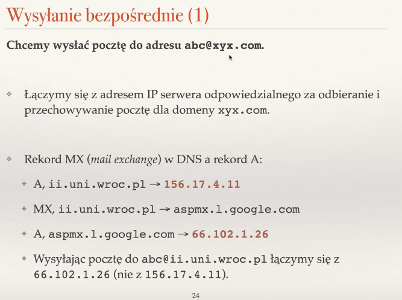
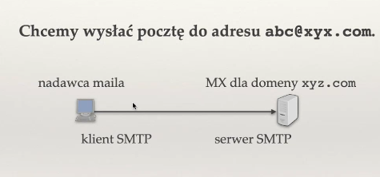
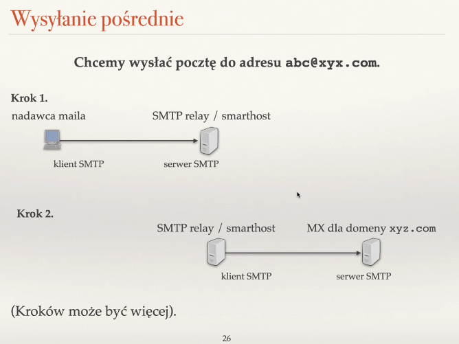
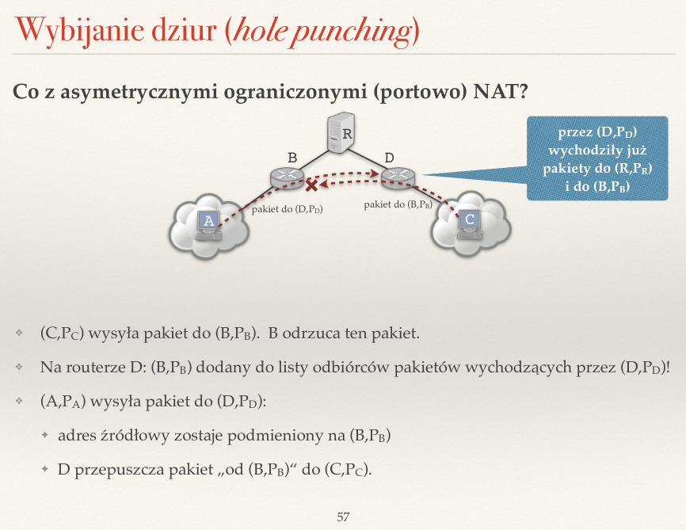

Created Saturday 25 June 2022
Zagadnienia
❖ Jaki jest cel systemu nazw DNS?
Służy do tłumaczenia nazw symbolicznych— bardziej zrozumiałe dla ludzi — na adresy IP.
❖ Do czego służy plik /etc/hosts?
Przechowuje lokalnie mapowanie adresów IP na nazwy symboliczne. Stosowany głównie w początkach internetu, gdy sieć była niewielka.
❖ Rozwiń skrót TLD (kontekst: DNS), podaj parę przykładów.
TLD — Top Level Domains — domeny krajowe, znajdują się na górze hierarchii nazw domen w DNS.
❖ Czym są strefy i delegacje DNS?
Strefy DNS — spójne fragmenty drzewa hierarchii nazw domen. Jest to najmniejsza jednostka administracyjna DNS, odrębnie zarządzana. Właściciel danej strefy (sewer DNS) wie wszystko o nazwach domen w tej strefie.
/pasted_image.png)
Delegacja DNS — wpisy w rekordach NS (nameserver). Cały rekord NS przechowuje nazwę strefy, np. wroc.pl, oraz wartość — nazwę serwera DNS obsługującego strefę, np. sun2.pwr.wroc.pl. Rekord powinien pamiętać kogo odpytywać jako następnego, gdy przechodzimy w dół po drzewie hierarchii nazw domen. Wpisy, które nas o tym informują to delegacje.
❖ Czym różni się rekurencyjne odpytywanie serwerów DNS od iteracyjnego?
Rozszyfrowywanie iteracyjne — klient sam przechodzi przez drzewo DNS od korzenia w dół.
Rozszyfrowywanie rekurencyjne — klient pyta resolver DNS, a on w jego imieniu wykonuje dalsze odpytywanie.
Resolver DNS — to co wpisujemy w polu server DNS, gdy konfigurujmey komputer. Służy do pooprawy wydajności odpytywać, bo zapisuje zwracane wyniki w pamięci podręcznej. Sam może być też serwerem DNS.
❖ Jak działa odwrotny DNS? Jaki typ rekordów i jaką domenę wykorzystuje?
Służy do odwrotnej konwersji — adresy IP na nazwę domeny. Wykorzystuje typ rekordów PTR oraz sztuczną domenę in-addr.arpa, której poddomenami są klasy lub adresy IP.
/pasted_image002.png)
❖ Jakie znasz typy rekordów DNS? Co to jest rekord CNAME?
Typy rekordów:
- A (adres IPv4)
- AAAA (adres IPv6)
- NS (nameserver)
- CNAME (canonical name) — nazwa to alias nazwy domeny, np. www.ii.uni.wroc.pl, a wartość to główna nazwa domeny, np. swiatowit.ii.uni.wroc.pl
- MX (mail exchanger) — nazwa to nazwa domeny, np. gmail.com, a wartość to serwer obsługujący pocztę, np. gmail-smtp-in.1.google.com
❖ Po co są wpisy sklejające w opisie delegacji DNS?
Są to wpisy przechowujące to rekordy NS, które dodatkowo przechowują także adresy IP, co pozwala na unikanie nieskończonych pętli w odpytywaniu, np. pytamy się uni.wroc.pl o t, jaki adres ip ma on sam.
/pasted_image003.png)
❖ Co robi funkcja getaddrinfo()?
Służy do odpytywania DNS w programie. Zwraca ciąg wypełnionych struktur addrinfo, które od razu możemy wykorzystać. Przyjmuje tzw. hinty, które informują ją o tym, jakie typy adresów nas interesują, np. mailowe lub IPv4.
/pasted_image004.png)
❖ Do czego służy protokół SMTP a do czego POP3?
SMTP służy do przekazywania poczty od klienta do serwera i potem gdzieś dalej, np. do odbiorcy.



POP3 służy do przekazywania poczty od serwera do klienta.
❖ Co to jest przekazywanie poczty (relaying)? Co to jest smarthost?
Przekazywanie poczty nie bezpośrednio od nadawcy do serwera, który może nie zawsze być dostępny — musimy wtedy czekać, aż email dotrze. Żeby nie czekać samemu, możemy zlecić to innemu serwerowi — relayowi/serwerowi SMTP/smarthostowi.
/pasted_image010.png)
/pasted_image008.png)
/pasted_image011.png)
❖ Jaki rekord DNS jest sprawdzany przed wysłaniem poczty do danej domeny?
Rekord MX (mail exchanger).
❖ Wymień parę popularnych pól w nagłówku maila. Do czego służą pola Received i Bcc?
- From
- To
- Subject
- Cc — kopiowanie maila do innych osób, niż tylko odbiorca.
- Bcc — ślepia kopia — kopiowanie maila do innych osób niż odbiorca, ale ich adesy nie są wyświetlane w liście odbiorców, czyli odbiorcy nie widzą się wzajemnie.
- Mesage-ID (unikatowy identyfikator wiadomości)
- Date (data wysłania)
- In-Reply-To (ID maila, na którego odpowiadamy)
- References
- Received — gdy mail przechodzi przez kolejne pośredniczące serwery pocztowe, wtedy w tym polu są zapisywane informacje o tym przystanku, np. jego adres i data otrzymania.
/pasted_image012.png)
❖ Na czym polega greylisting?
Wysyłanie spamu jest opłacalne, wysyłamy go szybko. Graylisting opiera się na spowalnianiu spammera, mówiąc mu, że teraz nie możemy odpowiedzieć i musi spróbować później. Akceptujemy maile tylko, jeśli przyjdą wtedy w odpowiednim oknie czasowym. Obecnie rzadko stosowane, bo spowalnia komunikację.
❖ Na czym polega mechanizm SPF?
Rekordy SPF w DNS dla danej domeny definiują jakie komputery są uprawnianie do wysyłania poczty z polem from równym danej domenie. Chroni przed podszywaniem się (spammer moze udawać, że nie jest spamem, podając jako from na przykład adres odbiorcy. To odbiorca sprawdza ten rekord.
❖ Co umożliwia standard MIME?
Umożliwia informowanie klienta pocztowego o tym czym jest treść maila, np. czystym tekstem, tekstem HTML, obrazkiem, plikiem, itd.
❖ Co to jest spam? Jakie znasz metody walki ze spamem?
Spam to niechciane wiadomości, często reklamy. Metody walki ze spamem to, np.:
- graylisting
- mechanizm SPF
- filtrowanie wiadomości przez regexy, uczenie maszynowe, heurystyki
❖ Jaka jest rola trackera w sieci Bittorrent?
Tracker to specjalny serwer, który zna adresy członków sieci i udostępnia adresy niektórych (50-100). Jego IP jest przechowywane w pliku turrent. Tracker zapewnia, że sieć się nie rozpada, przechowując listę użytkowników i komunikuje ze sobą użytkowników.
❖ Po co w plikach .torrent stosuje się funkcje skrótu?
W metadanych pliku .torrent przechowuje się funkcje skrótu dla każdego z kawałków, które pozwalają sprawdzić, czy pobieramy dobry kawałek, bo ktoś może nam wysyłać jakieś śmieci.
❖ Jakie są różnice w postępowaniu seedera i leechera w sieci BitTorrent?
Seeder — wybiera po kolei kandydatów do odbierania plików spośród chętnych.
Leecher — ma listę klientów, którym udostępnia, ale tylko pod warunkiem, że dostanie coś od nich w zamian. Na tej liście są ci, którzy najszybciej wysyłają mu swoje kawałki. Czasami wysyła kawałek losowemu człokowi sieci, by sprawdzić, czy uda mu się odesłać kawałek odpowiednio szybko. Nowym klientom przekazuje kawałek za darmo.
❖ Na czym polegają połączenia odwrócone? Jak stosuje się je w protokole FTP?
NAT sprawia problemy w komunikacji między dwoma komputerami za innymi NATami. Jeśli komputer C chce się połączyć z A, ale A jest za NATem, wtedy oba utrzymują kontakt z jakimś komputerem R. C może prosić za pośrednictem R kompter A o nawiązanie połączenia z C. Wtedy komunikacja zachodzi, ale połączenie jest odwrócone.
/pasted_image014.png)
W protokole FTP stosuje się je trochę inaczej. A chce się łączyć z C i wysyłą polecenie "chcę pobrać plik i słucham na porcie X". C łączy się z X klienta A i wysyła plik, ale robi to odrębnym połączeniem TCP. NAT odrzuciłby takie połączenie. Dlatego robi się to inaczej — w trybie pasywnym. A wysyła polecenie "chcę pobrać plik w trybie pasywnym", wtedy C zaczyna słuchać na Y i wysyła komunikat "słucham na Y". A łączy się z Y i pobiera plik. Jak widać, tutaj połączenie też jest odwrócone.
/pasted_image015.png)
❖ Opisz podobieństwa i różnice asymetrycznych (cone) NAT (pełnego, ograniczonego i ograniczonego portowo) i symetrycznych NAT.
/pasted_image016.png)
Wszystkie łączy fakt, że przypisują komputerom ze swojej sieci pewne mapowanie i zapamiętują je, by odsyłać tym komputerom odpowiedzi spoza sieci. W NAT asymetrycznym nie ma żadnych ograniczeń co do tego, kto może odsyłać pakiety do komputerów wewnątrz sieci. W ograniczonym NAT mogą odsyłać tylko te adresy, na które komputer z NAT coś wysyłał. W ograniczonym portowo dodajemy takie samo ograniczenie ale do portów, na które wysyłamy.
W NAT symetrycznym wybijanie dziur (najpierw wysyłam do kogoś, żeby wiedział, jak do mnie odesłać i mógł to zrobić — zostanie zapisany w NAT na liście odbiorców) nie jest możliwe, ponieważ mapowanie jest zależne nie tylko od adresu i portu nadawcy, ale także odbiorcy — przy wysłaniu do różnych odbiorców mamy zupełnie innne mapowanie.
❖ Opisz technikę wybijania dziur (hole punching) w NAT. Po co konieczny jest serwer pośredniczący?
Router C chce komunikować się z A, ale nie wie jaki ma on adres. Dlatego najpierw wysyła do B, które odrzuca ten pakiet, ale na routerze D adres B zostaje zapisany na liście odbiorców komputera C. Teraz A wysyła pakiet do D. Adres jest podmieniany na B, a D przepuszcza pakiet od B do C. Wszystko gra, tralalalala ;)

/pasted_image001.png){kind=link}
/pasted_image005.png){kind=link}
/pasted_image006.png){kind=link}
/pasted_image007.png){kind=link}
/pasted_image009.png){kind=link}
/pasted_image013.png){kind=link}
/pasted_image017.png){kind=link}